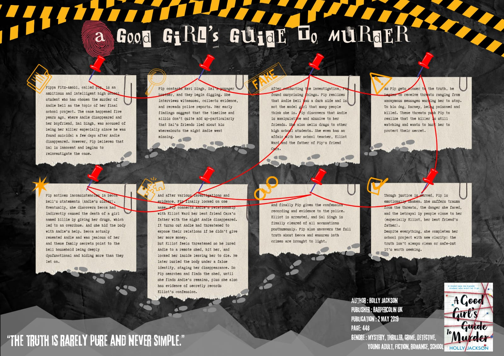
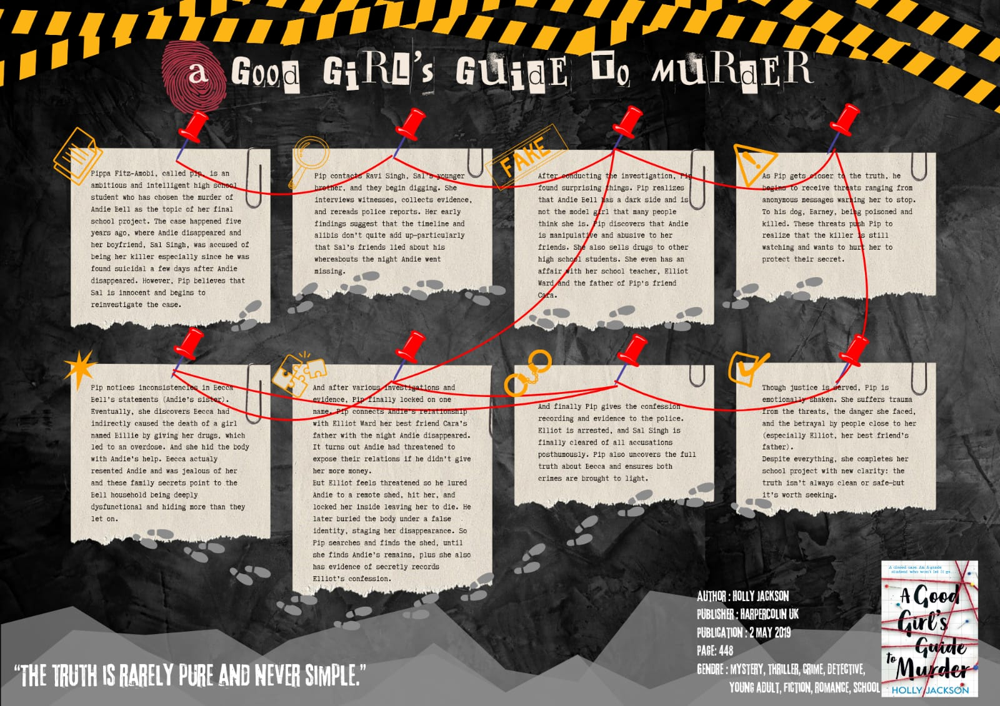
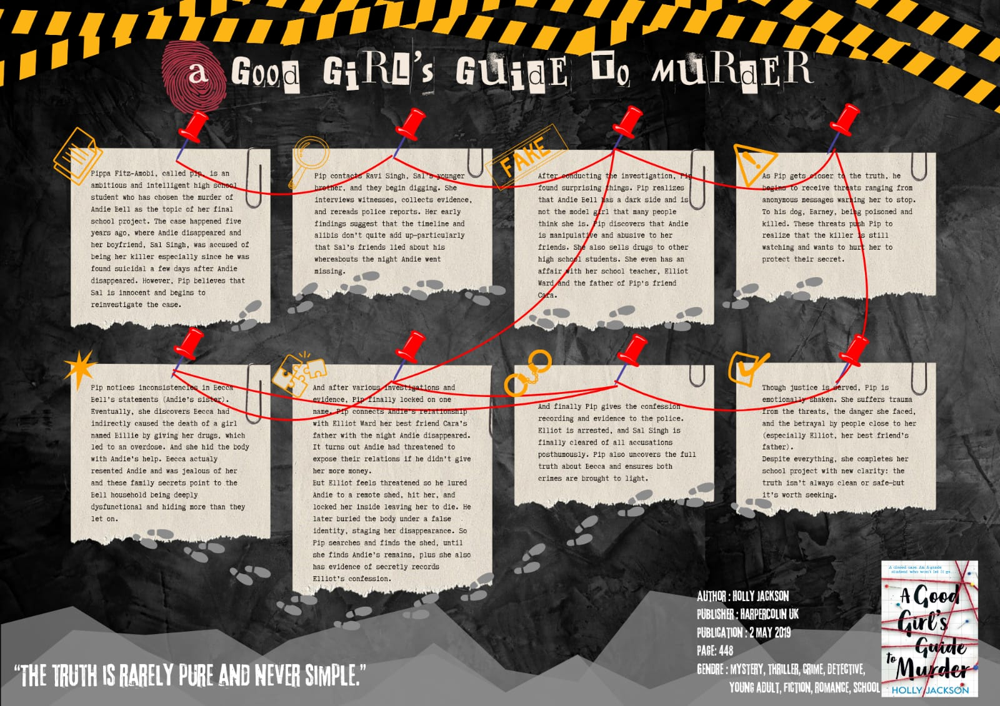

Portopolioku
 


Saya adalah mahasiswa Poban dengan program studi D3 Teknik Informatika. Lahir tanggal 30 bulan juni 2004 di bandung dan berjenis kelamin perempuan.
Saya memiliki kegemaran dalam membaca karena itu membantu saya dalam memahami berbagai konsep baru terutama dibidang teknologi dan pemrograman.
Sebagai mahasiswa baru, saya memiliki keahlian dalam pemecahan masalah, pemrograman dasar, serta analisis logis, yang saya kembangkan sejak SMK di bidang Rekayasa Perangkat Lunak Saya juga terbiasa bekerja secara terstruktur dan mandiri, namun tetap mampu berkolaborasi dalam tim.
Rekayasa Perangkat Lunak
D3 Teknik Informatika
SMKN 4 Padalarang
PT Crop Digital Indonesia
Politeknik Negeri Bandung
Politeknik Negeri Bandung

"
Hidupmu bukan panggung untuk memenuhi ekspektasi
orang lain. Tetap percaya diri, karena nilai dirimu nggak
ditentukan komentar mereka, tapi langkahmu sendiri"
-hamba tuhan